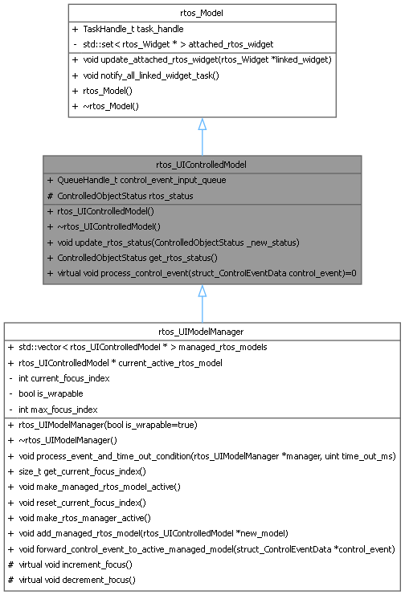
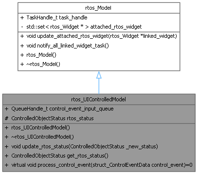
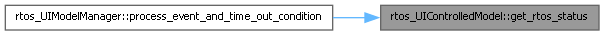
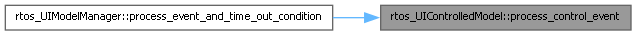
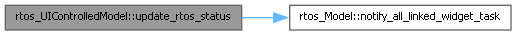
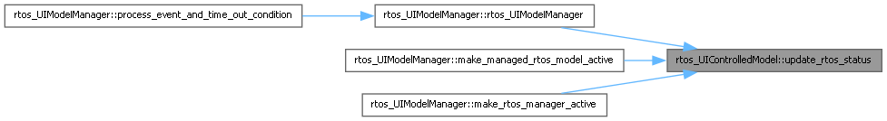

- Generated by
 1.16.1
1.16.1
RTOS wrapper for UIControlledModel class This class represents a model that can be controlled by user interactions in the RTOS-based UI framework. It extends the rtos_Model class and adds functionality for handling control events and managing the status of the model (e.g., active, waiting, has focus). The rtos_UIControlledModel class includes a FreeRTOS queue for receiving control events, which can be processed by the model to update its state or behavior based on user interactions. The status of the model is represented by the ControlledObjectStatus enum, which indicates whether the model is idle, waiting, has focus, or is active. This status can be used by the UI framework to manage user interactions and determine which model should receive control events. The rtos_UIControlledModel class is designed to be extended by more specific controlled model classes that represent different types of data or functionality in the UI. These specific controlled model classes can then be linked to various widgets that display or interact with the model's data, allowing for dynamic and interactive user interfaces in an RTOS environment. More...
#include <rtos_ui_core.h>


Public Member Functions | |
| void | update_rtos_status (ControlledObjectStatus _new_status) |
| update the status of the controlled model | |
| ControlledObjectStatus | get_rtos_status () |
| Get the current status of the controlled model. | |
| virtual void | process_control_event (struct_ControlEventData control_event)=0 |
| process a control event received from the control event queue. | |
| Public Member Functions inherited from rtos_Model | |
| void | update_attached_rtos_widget (rtos_Widget *linked_widget) |
| link a new widget task to the model | |
| void | notify_all_linked_widget_task () |
| notify all linked widget tasks that the model has changed | |
| rtos_Model () | |
| constructor for RTOS model | |
| ~rtos_Model () | |
| destructor for RTOS model | |
Public Attributes | |
| QueueHandle_t | control_event_input_queue |
| FreeRTOS queue handle used to receive control events for this model. | |
| Public Attributes inherited from rtos_Model | |
| TaskHandle_t | task_handle {nullptr} |
| the task handle of the model task | |
Protected Attributes | |
| ControlledObjectStatus | rtos_status {ControlledObjectStatus::IS_WAITING} |
| The status of the model, indicating if it is waiting, active or just ahs focus (pointed by the object manager). | |
RTOS wrapper for UIControlledModel class This class represents a model that can be controlled by user interactions in the RTOS-based UI framework. It extends the rtos_Model class and adds functionality for handling control events and managing the status of the model (e.g., active, waiting, has focus). The rtos_UIControlledModel class includes a FreeRTOS queue for receiving control events, which can be processed by the model to update its state or behavior based on user interactions. The status of the model is represented by the ControlledObjectStatus enum, which indicates whether the model is idle, waiting, has focus, or is active. This status can be used by the UI framework to manage user interactions and determine which model should receive control events. The rtos_UIControlledModel class is designed to be extended by more specific controlled model classes that represent different types of data or functionality in the UI. These specific controlled model classes can then be linked to various widgets that display or interact with the model's data, allowing for dynamic and interactive user interfaces in an RTOS environment.
| ControlledObjectStatus rtos_UIControlledModel::get_rtos_status | ( | ) |
Get the current status of the controlled model.

|
pure virtual |
process a control event received from the control event queue.
| control_event | the control event to be processed |

| void rtos_UIControlledModel::update_rtos_status | ( | ControlledObjectStatus | _new_status | ) |
update the status of the controlled model
| _new_status | the new status to be set |

